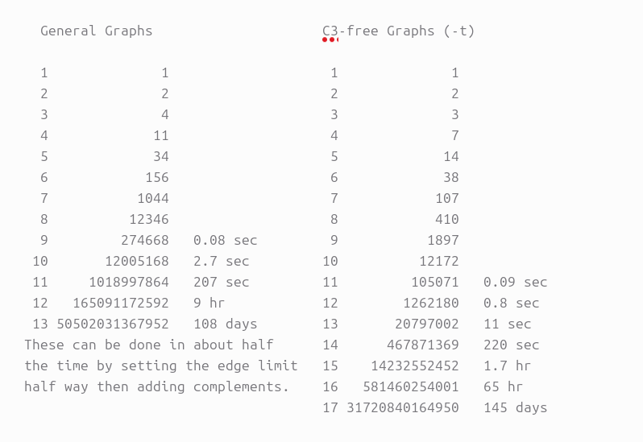

Computational Burden in Graph Generation as the Number of Nodes Increases
This page is about a practical puzzle that appears quickly when working with graph generators such as geng in the nauty package: even when we ask for only non-isomorphic graphs, graph generation still becomes computationally expensive as the number of vertices grows. The point here is not merely theoretical. I later use my own machine and my own code to mimic the style of the documentation and see what the burden looks like in actual runs.
Documentation Figure from geng.c
The following figure can be placed in the same folder as this HTML file. It is intended to show the relevant documentation excerpt from geng.c in nauty, especially the portion that helps explain how graph counts and options scale as graph generation becomes more ambitious.

geng.c in the nauty package. This serves as the reference point for the discussion below: what the generator does, what it outputs, and why growth in the number of vertices rapidly turns graph generation into a serious computational task.
Why Graph Generation Gets Expensive
Reason 1: The search space grows explosively
A simple graph on n vertices has one independent yes-or-no decision for every possible edge. Since there are n(n-1)/2 possible edges, the number of all labeled simple graphs is
2^(n(n-1)/2). That expression becomes enormous very quickly. Even moderate increases in n produce a dramatic jump in the total number of possibilities.
This is the first source of computational burden. The input universe itself is expanding at a rate that is far faster than linear or polynomial growth.
Reason 2: Keeping only non-isomorphic graphs still leaves a huge class
A common first thought is that if we keep only one graph from each isomorphism class, then the problem should become manageable. This is only partially true. It avoids massive duplication, but the number of unlabeled, or non-isomorphic, graphs still grows very fast with n. In other words, the quotient space is still enormous.
So even if one graph stands in for all of its relabelings, the list of genuinely different graphs can still be far too large to generate, store, or process comfortably on an ordinary machine once the number of nodes is large enough.
Reason 3: Non-isomorphic generation is itself computational work
The generator must do more than simply print graphs. It must construct them in a way that avoids repeated isomorphic outputs. That means canonical tests, augmentation logic, rejection rules, orbit calculations, or related symmetry-handling steps are built into the generation process.
So the burden comes from two directions at once:
- there are many candidate structures to consider, and
- there is real computation required to certify that only one representative per isomorphism class is kept.
This is why “only non-isomorphic graphs” is a major improvement, but not a magic escape from combinatorial growth.
Reason 4: Storage, memory, and I/O become bottlenecks
Even when the generator itself is efficient, the resulting graph stream may be so large that writing it to disk becomes slow, processing it downstream becomes expensive, and memory use becomes a real limitation. This is especially noticeable when one attempts large edge ranges, broad degree ranges, or output pipelines that feed later filtering and analysis.
In practice, a machine may fail not because the mathematics is unclear, but because time, RAM, file size, and downstream parsing all pile up together.
Why a Single Representative per Isomorphism Class Is Still Not Enough
It is worth stressing the main conceptual point once more. Suppose an isomorphism class contains many labeled duplicates. Replacing that entire class with one representative is a very powerful compression step. However, as the number of vertices increases, the number of distinct classes themselves still becomes huge.
This is why one often turns to tighter constraints:
- connected graphs only,
- degree-restricted graphs,
- triangle-free or cycle-free variants,
- fixed edge counts,
- sampling rather than full enumeration,
- or splitting a job into modular subcases.
These restrictions do not change the underlying combinatorial reality, but they can make a specific experiment feasible on real hardware.
My Machine and My Own Mimic of the Documentation
After using the original documentation as a reference, I then run my own experiments to see how the burden looks on my own machine. The next figure is meant to hold a screenshot, plot, or table from that machine-side reproduction.

geng documentation. This is where the discussion becomes empirical rather than purely conceptual: how many graphs are produced, how long a run takes, where the slowdown begins, and which constraints matter most on the hardware I am actually using.
Code Option
The block below is deliberately set up as a place for code that reproduces, tests, or extends the documentation on a local Linux machine. You can leave it as-is for a simple nauty example, or replace it with your own Bash or Python script later.
# Move into the nauty directory that contains geng
cd /path/to/nauty
# Show geng help
./geng -help
# Count all connected graphs on 8 vertices, without printing them
./geng -u -c 8
# Count connected graphs on 10 vertices with minimum degree 2
./geng -u -c -d2 10
# Generate connected graphs on 8 vertices with exactly 10 edges
./geng -c 8 10
# Example: restrict the degree range
./geng -u -d2 -D4 10
# Example: split generation into modular parts
./geng -u res/mod 12import time
import subprocess
commands = [
["./geng", "-u", "-c", "8"],
["./geng", "-u", "-c", "-d2", "10"],
["./geng", "-u", "-d2", "-D4", "10"]
]
for cmd in commands:
start = time.time()
proc = subprocess.run(cmd, capture_output=True, text=True)
end = time.time()
print("=" * 70)
print("Command:", " ".join(cmd))
print("Elapsed seconds:", round(end - start, 4))
print(proc.stdout.strip())
if proc.stderr.strip():
print("stderr:")
print(proc.stderr.strip())How I Intend to Use This Later
This page is meant to bridge documentation and experiment. The documentation figure gives the official reference point from geng.c. The machine-side figure shows what happens when I try to mimic, test, or extend that behavior on my own hardware. The interesting part is not only the raw count of graphs, but also how fast the burden appears as the number of nodes rises.
-u, narrow constraints, or smaller vertex counts first before attempting a full generation run.
Suggested Interpretation
When generation begins to slow down sharply, that does not mean the software is poorly designed. Quite often, it means the program is faithfully confronting the underlying combinatorial size of the problem. The nauty tools are efficient precisely because they make difficult graph-generation problems possible at all. The slowdown is often evidence of the mathematics of the search space, not merely a weakness of implementation.
That is what makes this topic interesting: graph generation is one of the clearest places where abstract combinatorics, algorithmic group action, and the hard limits of ordinary hardware all meet.